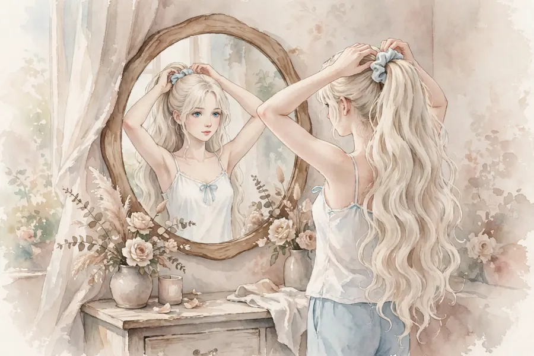

トップ ＞ ヘアケア ＞ 髪の結び方と結び跡のつきにくい工夫
髪の結び方と結び跡のつきにくい工夫

仕事や家事のとき、髪を結ぶ方は多いと思います。施術の現場では、結び跡や、結ぶ場所の髪の状態についての相談を受けることがあります。この記事では、結び方そのものの工夫を整理します。特定の結び方をおすすめするものではなく、負担を分散する考え方の紹介です。
「いつも同じ場所」が負担を集中させる
毎日同じ位置、同じ高さで結んでいると、その場所に引っ張りと摩擦が集中します。結ぶ位置を日によって少し変える、高さを変える、分け目を変える。こうした分散の考え方は、このサイトで繰り返し紹介している基本です。
また、結ぶ強さも見直しどころです。きつく結ぶほど、頭皮への引っ張りが長く続きます。家事など激しく動かない場面では、ゆるめに結ぶ日を作ることも選択肢です。場面に合わせて強さを変えるだけでも、負担の分散になります。
ゴムの種類と太さを見る
結ぶ道具には、細いゴム、太いゴム、布で覆われたもの、コイル状のものなど、種類があります。一般に、髪に当たる面積が広いものほど、一点への負担は分散されやすいと考えられます。跡のつきやすさも道具によって違いがあります。「跡がつきにくい」といった案内がある商品もありますが、感じ方には個人差があるため、試して確かめるのが確実です。
濡れた髪を結ぶのは、もつれやすく跡もつきやすいため、乾いてから結ぶのが基本です。入浴後すぐにまとめたい場合は、タオルで水分を取ってからにしてください。
外すときも、引っ張らない
結びを外すとき、ゴムを一気に引き抜くと、髪が引っかかって負担がかかります。ゴムを少しずつずらしながらほどく、結び目を手で支えながら外す。この小さな手順が、毎日の積み重ねでは大切です。
外した後は、ブラシで軽く整えてからシャンプーや就寝に進むと、もつれを翌日に持ち越しにくくなります。結ぶことと外すことの両方に目を向けると、髪の扱いの全体像が見えてきます。道具の見直しとあわせて、ぜひ試してみてください。
結ぶ高さによって、見た目の印象だけでなく、首筋への当たり方や、うなじの日差しの当たり方も変わります。夏場は高めに結んで首筋を出す方も多いですが、その分、襟足まわりのすすぎや日差し対策も意識したいところです。結び方ひとつで、ケアの注意点も少しずつ変わってきます。
ゴムの劣化にも目を向けてください。伸びきったゴムは、同じ場所を何重にも巻くことになり、跡がつきやすくなります。道具は消耗品です。結ぶ力が弱くなったと感じたら、新しいものに替えるタイミングです。予備のゴムを洗面所とバッグの両方に置いておくと、外出先で結び直すときにも、無理な結び方をせずに済みます。
結び方にも、基本の形があります。ひとつ結び、三つ編み、お団子など、形によって負担のかかる場所が違います。同じ形ばかりを続けるのではなく、形そのものを日替わりにすることも分散の方法です。三つ編みは結び目が1か所に集中せず、編み目全体で髪を支えるため、跡のつき方が違うと感じる方もいます。場面に合わせて形を選ぶ楽しみも、結ぶケアのうちです。結ぶ前のブラッシングも忘れずに。もつれたまま結ぶと、ほどくときに負担がかかります。結ぶ、ほどく、整える。この3つをセットで考えることが、結ぶ日のケアの全体像です。
結ぶ時間の長さも、負担の分散に関係します。帰宅したら早めにほどく、家では下ろして過ごすなど、結んでいる時間そのものを区切ることも、分散のひとつの形です。
結ぶ道具の置き場所を決めておくことも、毎日の負担を減らします。洗面所の引き出しの手前など、手が自然に伸びる場所に予備を置いておくと、探す時間と、無理な結び直しが減ります。道具の管理も、結ぶケアの一部です。

セラフィナ「結ぶ場所を変える、外すときはゆっくり。毎日の小さな分散が大事だね」